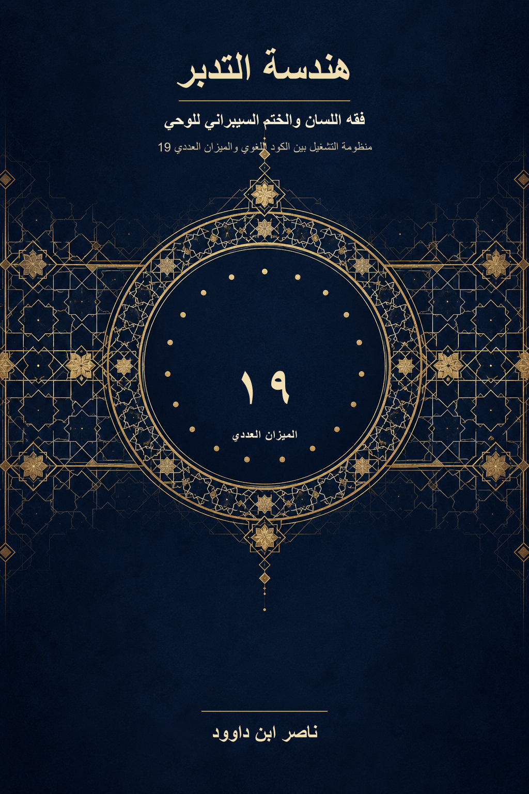

118. هندسة التدبر: فقه اللسان والختم السيبراني للوحي

منظومة التشغيل بين الكود اللغوي والميزان العددي 19؛ دراسة تجمع فقه اللسان القرآني والقراءة البنيوية والحساب وفق قاعدة معلنة، مع التمييز بين النص والبيان والنتيجة الحسابية واستنباط المؤلف. النسخة الإنجليزية تكييف معنوي مختصر.
النسخة الإنجليزية تكييف معنوي مختصر؛ يبقى النص العربي المرجع الأساسي للتحليل التفصيلي.
قراءة PDF داخل الموقع / Read the PDF on this website
جارٍ تجهيز القارئ… / Preparing the reader…
ملخص الكتاب وفهرسه الموضوعي (مقتطف نصي للفهرسة والبحث)
هندسة التدبر: فقه اللسان والختم السيبراني للوحي
منظومة التشغيل بين الكود اللغوي والميزان العددي 19
ناصر ابن داوود
ملخص الكتاب
يقدّم هذا الكتاب منهجاً في تدبّر القرآن يجمع بين فقه اللسان القرآني والقراءة البنيوية والميزان العددي القائم على العدد 19. وينطلق من أن اختيار اللفظ ورسمه وموضعه في السياق عناصر مترابطة في بناء النص، ويقترح أدوات لتحليلها، منها نفي الترادف الوظيفي، ونظام المثاني، والمعنى الحركي، والقِران بين الآيات والمواضع ذات الصلة.
يعرض الكتاب بروتوكولاً لقراءة المسألة القرآنية وتحديد وحدتها النصية، ثم تتبّع علاقاتها السياقية والشبكية، وإجراء الحساب وفق قاعدة معلنة. ويطبّق هذا المسار على موضوعات وفصول متعددة، مع فتح مجال البحث أمام القارئ لإعادة تشغيل التطبيقات واستكمالها. ويميّز الكتاب بين النص القرآني، والبيان اللغوي، والنتيجة الحسابية، واستنباط المؤلف؛ ليعرض مشروعه وأدلته، ويترك للقارئ أن يفحص المسار ويحكم عليه ويضيف إليه.
المخطط البنيوي للكتاب
طريقة قراءة الكتاب
ينطلق هذا الكتاب من موقف مؤلفه بأن العدد 19 قانون حاكم وختم حماية في البنية القرآنية، وأن الخوارزمية متى ثُبّت نصها المرجعي وقاعدة عدّها أعطت نتائج حتمية قابلة لإعادة التشغيل؛ فالمدخلات ذاتها تنتج الحساب ذاته. ويقرأ المؤلف انتظام هذه النتائج بوصفه شهادة على البصمة الإلهية، وعلى التفاعل بين الوزن العددي وفقه اللسان. ويقوم البروتوكول على تثبيت الرسم، وتحديد «المسألة الكاملة»، وإعلان القيم وخطوات الحساب، ثم تمكين القارئ من تشغيله بنفسه. ولا يترك الكتاب هذا الموقف في صيغة إعلان مجرد، بل يضع أمثلته وجداوله أمام الفحص؛ ويعرض الجسر من النتيجة الحسابية إلى دلالتها اللسانية والمعرفية كي يناقشه القارئ على بينة. وتظل مصطلحات المؤلف، ومنها «المثاني» و«المعنى الحركي» و«القِران» و«الختم السيبراني»، جزءاً من جهازه التحليلي. ويُفصل في القراءة بين النص القرآني، والبيان اللغوي، والنتيجة الحسابية، والاستنتاج، والنموذج التشغيلي، لتكون الحجة واضحة الخطوات وقابلة لإعادة التشغيل.
كلمة إلى المتدبرين: مفاتيح هندسة التدبر واستنطاق الوحي
أيها الباحث عن اليقين، والمتطلع إلى الارتواء من النبع الصافي للقرآن، يضع هذا الكتاب بين يديك خارطةً لقراءة تجمع التدبر اللغوي والسياقي والميزان العددي. فالقرآن كتاب هداية يُتلى ويُتدبر، ويقرأه هذا البحث أيضاً بوصفه منظومةً متماسكةً تخاطب الوعي؛ و«نظام التشغيل» وصفٌ تحليلي يستعمله المؤلف لبيان طريقة عمل أدوات التدبر، لا لفظٌ ينسبه إلى النص القرآني.
استقرأ هذا البحث معالم «هندسة التدبر» وجمعها في أربعة مفاتيح: ضبط الرسم المرجعي، وتحليل بنية اللفظ، وقراءة السياق والموضوع، ثم اختبار انتظام الوحدة النصية بالميزان العددي. وهي أدوات مترابطة، يشرح الكتاب خطوات تشغيلها ويعرض تطبيقاتها للقارئ.
أولاً: الرسم المرجعي. يبدأ الحساب بتعيين النص المعتمد وقاعدة تمثيل حروفه. ويعتمد الكتاب الرسم العثماني أساساً لبحثه، ويقرأه بوصفه عنصراً في البنية التي يتناولها الميزان. وتُوثّق لكل تطبيق نسخته أو شاهده وموضعه، مع التمييز بين رسم الحرف وعلامات النقط والضبط، وبيان قواعد الهمزة والألفات وسائر الصور الكتابية الداخلة في العد.
ثانياً: نظام المثاني. ينطلق فقه اللسان القرآني من نفي الترادف الوظيفي التام، ويقترح تحليل الأزواج الحرفية، أو «المثاني»، لاستكشاف البؤرة الدلالية والمعنى الحركي للكلمة. ويُقرأ الحرف الثالث في صلته بما قبله وباستعمال الكلمة في مواضعها؛ فلا يستقل التفكيك الحرفي عن الاستقراء اللغوي والسياقي.
ثالثاً: السياق ووحدة الموضوع. يقوم «القِران» على وصل الآيات والمواضع ذات الصلة لتكوين حقل دلالي، ثم تحديد «المسألة الكاملة» التي يتناولها التطبيق. ويستقصي الباحث النصوص المرتبطة بالموضوع، ويقرأ كل عبارة ضمن سياقها وشبكتها القرآنية، ليعرض البيان القرآني ووجه الاستنباط معاً.
رابعاً: الميزان العددي 19. بعد تعيين النص والرسم وحدود المسألة وجدول القيم، تُجرى العملية الحسابية وتُعلن خطواتها. ويرى مؤلف الكتاب أن انتظام نتائج الميزان وتكاملها مع القراءة اللغوية والسياقية شاهد على الختم العددي في بنية القرآن، وأن العدد 19 يؤدي دوراً حاكماً في هذا البناء. ويستطيع القارئ إعادة الحساب ومناقشة دلالته على ضوء المدخلات والقواعد المعلنة.
أيها المتدبر، هذه المفاتيح الأربعة—الرسم المرجعي، والمثاني، والقِران والسياق، والميزان العددي—تضعك في موقع الباحث المشارك: تقرأ النص، وتفحص خطوات الاستدلال، وتعيد تشغيل التطبيقات، ثم تضيف ما يفتحه التدبر من مسارات. والكتاب يدعوك إلى قراءة واعية للموروث والقراءات، وإلى أن يكون الحكم للنص والحجة والمنهج. القرآن ساحة مفتوحة للتدبر، فاستعن بالله، وامض في البحث، فلعلّك تكتشف من كنوزه ما لم نبلغه بعد.
1
مقدمة الكتاب
الختم الهندسي والشيفرة القرآنية
هناك لحظة في عمق كل إنسان، يتوق فيها الحرف أن يتحرر من صمته، وأن يتذكر أنه لم يُخلق ليُقال، بل ليُرى كمرآة لله في قلب الإنسان. وفي النسق القرآني، لم تنزل الكلمات كأوعية فارغة تُملأ بالمعاني التاريخية المتعاقبة، بل تنزلت كـ "منظومة هداية" مغلقة تشريعياً ومفتوحة تدبرياً.
القرآن الكريم يعمل كـ "نظام تشغيل" للوعي (QCROS). وهذا النظام، لحمايته من أي اختراق بشري أو انزلاق تأويلي يفرض موروثات ظنية على النص، تم تشفيره وإحكامه بختم معرفي وهندسي بالغ الدقة: العدد 19.
هذا الكتاب ليس محاولة لإثبات الإعجاز العددي كغاية في حد ذاته، بل هو انتقال جذري نحو "تشغيل" هذا الإعجاز. إنها محاولة لاستخدام النسق الرياضي للعدد 19 كـ "ميزان دلالي" يرافق منهج "فقه اللسان القرآني"؛ حيث يعمل التفكيك البنيوي للحرف (والمثاني) على توليد المعنى الحركي، بينما يعمل الرقم 19 كقرينة حاسمة تضبط المتجه المعرفي، لتفرز التأويل القرآني الأصيل عن الانفلات التأويلي البشري. هنا، تنتقل المعجزة من مرحلة الإبهار إلى مرحلة "الاستيقان" ﴿لِيَسْتَيْقِنَ الَّذِينَ أُوتُوا الْكِتَابَ وَيَزْدَادَ الَّذِينَ آمَنُوا إِيمَانًا﴾، دافعةً بالوعي نحو "القلب السليم".
إعادة اكتشاف المعجزة: لماذا حان الوقت لنرى القرآن بعيون جديدة؟
منذ قرون، والعقل المسلم يتفاعل مع القرآن الكريم على أنه معجزة بيانية خالدة، وهذا حق لا شك فيه. لقد أذهل بلغاء العرب، وأرسى قواعد لغة وحضارة. ولكن، هل تجمدت المعجزة عند حدود البلاغة؟ أم أن القرآن، ككتاب لكل العصور، يكشف عن طبقات من إعجازه تتناسب مع كل عصر وأدواته؟
في عصرنا، عصر البيانات والأنظمة والتحليل البنيوي، لم يعد كافيًا أن نقول "إنه معجز"؛ بل أصبح العقل الحديث، المشبع بالمنطق والبحث عن البراهين المادية، يتساءل: "أرني كيف هو معجز". من هذا المنطلق، ظهرت مناهج تدبر جديدة لا تهدف إلى هدم الماضي، بل إلى بناء فهم أعمق يليق بزماننا. هي لا تكتفي بالانبهار، بل تسعى إلى "التشهيد"، أي أن تكون شاهدًا على البناء الإلهي المحكم.